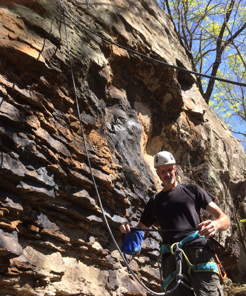
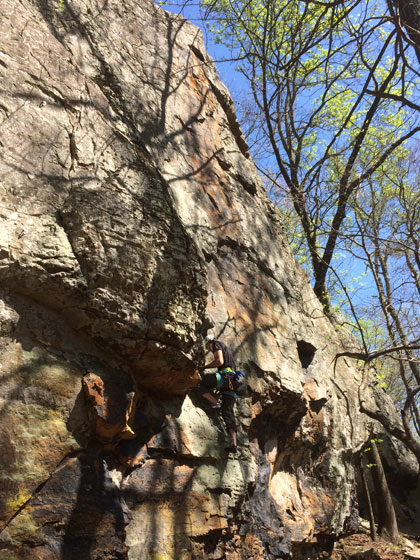
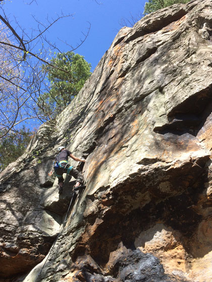
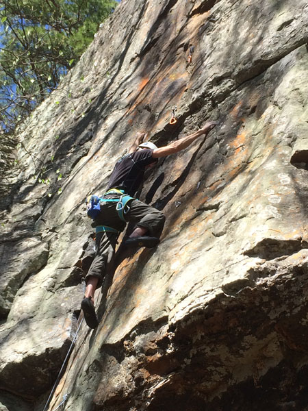
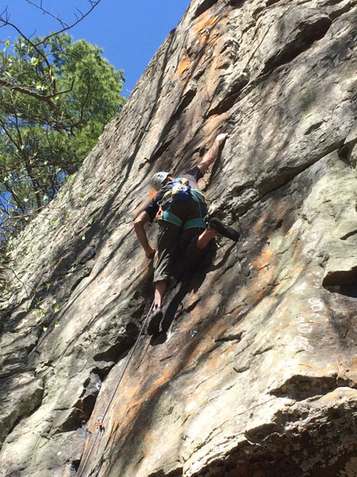
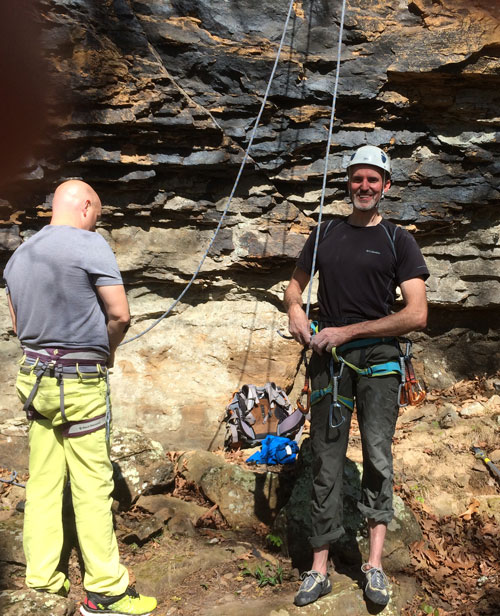

March, 2017
| Eric loves the new climbing area in Fern,
Arkansas. He and Kraig go there as often as they can. Here are
a few shots from a trip in March. This is Eric getting a first
ascent on "Zero to Hero", belay by Jerry Barnett. Photo credits and a big shout out goes to Kraig
Koroleski,
Eric's climbing buddy and friend. |
|
 |
 |
 |
 |
 |
 |
| Eric finally giving a real smile. | |